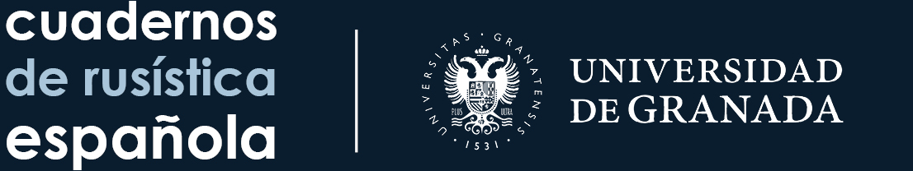

Русский язык и лингвистика
Грамматика, лексика, семантика, прагматика, дискурс, прикладная лингвистика и использование русского языка.
Научное издание для публикации оригинальных исследований по русскому языку, преподаванию русского как иностранного, лингвистике, литературе, культуре, переводу и смежным междисциплинарным направлениям. Научные статьи принимаются на персидском, русском и английском языках.

Журнал «Исследования по русскому языку» сотрудничает с испанским журналом Cuadernos de Rusística Española, связанным с Университетом Гранады, в области научного сотрудничества и взаимного обмена рецензированием статей.
Научная площадка для языковых, междисциплинарных и прикладных исследований
Исследования русского языка находятся на пересечении нескольких научных направлений: лингвистики, преподавания иностранных языков, литературы, культуры, перевода и межкультурной коммуникации. Это позволяет рассматривать язык не только как систему, но и с точки зрения его функционирования, обучения, текста, культуры и социального взаимодействия, представляя результаты в научно обоснованной и цитируемой форме.
По мере расширения научных и культурных связей с русскоязычным миром возрастает потребность в точных исследованиях преподавания русского языка, анализа текстов, переводоведения и культурных контекстов. Журнал стремится отвечать на эту потребность посредством публикации оригинальных научных работ, прошедших рецензирование.
Поэтому журнал приветствует исследования с чётко сформулированной проблемой, обоснованной методологией, документированным анализом и определённым научным вкладом, способствующие развитию русистики и укреплению научного диалога между исследователями в Иране и за его пределами.
Основные направления исследований
Грамматика, лексика, семантика, прагматика, дискурс, прикладная лингвистика и использование русского языка.
Русский как иностранный, методика, учебные программы, оценивание, обучение и подготовка преподавателей.
Русская литература, культура, межкультурная коммуникация, переводоведение и сравнительные исследования.
Политики и информация для авторов
Разрабатывается прозрачная процедура первичной проверки, экспертного рецензирования и принятия редакционных решений.
Политика →Принципы исследовательской добросовестности, авторства, конфиденциальности и конфликта интересов.
Подробнее →Требования к рукописям и порядок подачи статьи.
Руководство →Исправления, ретракции и работа с опубликованной научной записью.
Политика →Статьи, выпуски и отправка рукописей
Одна статья опубликована онлайн в томе 1, выпуске 1; библиографические сведения и данные автора доступны на странице статей.
Статьи →Том 1, выпуск 1 опубликован онлайн 17 сентября 2026 года; на странице выпуска доступны обложка и список статей.
Выпуски →Перед отправкой рукописи ознакомьтесь с руководством для авторов.
Отправить →